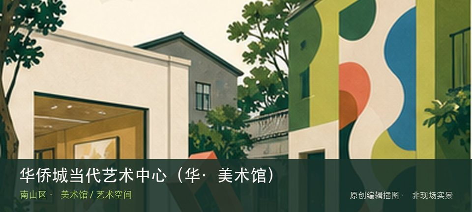
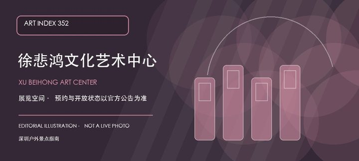

适合谁
适合愿意阅读展讯并细看少量作品的人；只想寻找固定常设展或网红机位者应先降低预期。

SHENZHEN GUIDE · 093
华侨城创意文化园 · 美术馆 / 艺术空间
华侨城当代艺术中心（华·美术馆）位于华侨城创意文化园北区，旧工业建筑中的当代艺术机构长期关注城市、设计和跨媒介实践，展期与空间调整决定是否值得专程进入园区。与同类地点相比，最值得停下来的差异落在旧厂房展厅和城市与设计主题展这两个具体节点上。这里的价值随展期变化，应把旧厂房展厅与城市与设计主题展放在同一次观看中，辨认作品、空间和所在街区的关系。先查当期展讯与入口，不把官方名录中的地址等同于随时可入场。
WHY GO
适合愿意阅读展讯并细看少量作品的人；只想寻找固定常设展或网红机位者应先降低预期。
先核对华侨城当代艺术中心（华·美术馆）当天开放与入口，从旧厂房展厅开始；体力或时间不足时，在前往城市与设计主题展之前结束，不临时追加陌生支线。
公共交通先到华侨城创意文化园北区片区，再以华侨城当代艺术中心（华·美术馆）公开参观入口为终点；校园、园区或预约型场馆须同时核对门禁与开放日。
自驾优先使用华侨城当代艺术中心（华·美术馆）所属建筑、园区或邻近正规公共停车场；预约时一并确认车牌登记、门岗和社会车辆准入规则。
全年可安排，炎热和降雨日更友好；展期、开幕活动与换展闭馆比季节本身更影响体验。
NEARBY IDEAS
 授权实景图
授权实景图
华侨城创意文化园位于华侨城旧工业区，旧厂房改造出的设计机构、画廊、书店和活动空间分散在南北区，体验随展览与店铺更替而变化。

编辑配图·非现场实景徐悲鸿文化艺术中心位于南山沙河街道东方社区深南大道9001号—10苏州街F栋F1，官方名录将其列入美术馆一览表。
 编辑配图·非现场实景
编辑配图·非现场实景
锦绣中华民俗文化村把中国名胜缩景、民族文化村落和现场演艺放进华侨城的一条主题游线，适合用半天到一天建立对不同地域景观与民俗叙事的整体印象。